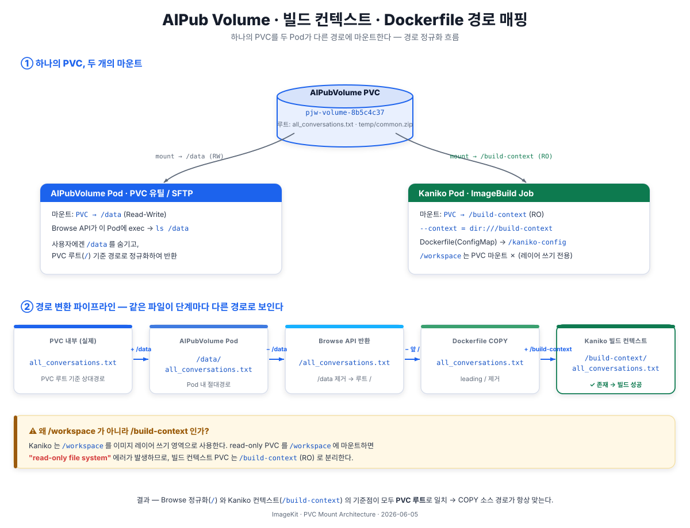

ImageKit Architecture
AIPubVolume PVC가 파일 브라우저(Browse API)와 Kaniko 빌드 Pod에서 각각 어떻게 마운트되고, 경로가 어떻게 매핑되는지를 정리한 문서이다.
최종 갱신: 2026-06-04
ImageKit의 COPY(Volume) 기능은 사용자의 AIPubVolume(PVC)에 있는 파일을 Kaniko 빌드 시 빌드 컨텍스트로 전달한다. 이 과정에서 세 군데의 Pod/컨테이너가 동일한 PVC를 서로 다른 경로에 마운트하므로, 경로 정규화 전략이 핵심이다.

| 주체 | Pod 이름 (예시) | 마운트 경로 | 읽기/쓰기 | 용도 |
|---|---|---|---|---|
| AIPubVolume Pod | pjw-volume-8b5c4c37 |
/data |
Read-Write | PVC 유틸 Pod. SFTP 등이 이 Pod을 통해 파일을 읽고 쓴다. Browse API도 이 Pod에 exec하여 ls를 실행한다. |
| Browse API (백엔드 서버) |
- | /data (exec 대상) |
Read-Only (ls만 수행) | 파일 브라우저. AIPubVolume Pod에 exec하여 파일 목록을 조회하고, 사용자에게는 PVC 루트 기준(/)의 경로를 반환한다. |
| Kaniko Pod (ImageBuild Job) |
imagebuild-xxxx-job-xxxxx |
/build-context |
Read-Only | 빌드 컨텍스트. Kaniko가 --context=dir:///build-context로 참조하여 COPY 소스 파일을 읽는다. |
PVC (pjw-volume-8b5c4c37)
├── all_conversations.txt
└── temp/
└── common.zip
┌─────────────────────────────────┐
│ AIPubVolume Pod │
│ PVC → /data │
│ │
│ /data/all_conversations.txt │
│ /data/temp/common.zip │
└────────────┬────────────────────┘
│ exec ls
┌────────────┴────────────────────┐
│ Browse API (Backend Server) │
│ │
│ 설정: pvc-mount-path = /data │
│ │
│ 사용자 요청 path="/" │
│ → 실제 실행: ls /data │
│ → 반환: all_conversations.txt, │
│ temp/ │
│ │
│ 사용자 선택: │
│ volumePath="/all_conv...txt" │
└────────────┬────────────────────┘
│ Dockerfile 생성
┌────────────┴────────────────────┐
│ Frontend (Dockerfile Editor) │
│ │
│ volumePath = "/all_conv...txt" │
│ → leading "/" 제거 │
│ → COPY all_conversations.txt │
│ /workspace/ │
└────────────┬────────────────────┘
│ 빌드 트리거
┌────────────┴────────────────────┐
│ Kaniko Pod (ImageBuild Job) │
│ │
│ PVC → /build-context (RO) │
│ --context=dir:///build-context │
│ │
│ COPY all_conversations.txt ... │
│ → /build-context/all_conv...txt │
│ → 파일 존재 → 빌드 성공 │
└─────────────────────────────────┘| 단계 | 경로 | 설명 |
|---|---|---|
| PVC 내부 (실제) | all_conversations.txt | PVC 루트 기준 상대 경로 |
| AIPubVolume Pod | /data/all_conversations.txt | Pod 내 절대 경로 (mount path = /data) |
| Browse API 반환 | /all_conversations.txt | PVC 루트를 /로 정규화 (mount path 제거) |
| Dockerfile COPY | all_conversations.txt | leading / 제거한 상대 경로 |
| Kaniko 빌드 컨텍스트 | /build-context/all_conversations.txt | PVC가 /build-context에 마운트됨 |
/로 통일AIPubVolume Pod의 마운트 경로(/data)는 Pod의 구현 상세이지 PVC 내부 구조가 아니다. Browse API는 이 마운트 경로를 숨기고, 사용자에게는 PVC 루트를 /로 보여준다. 이를 통해 어떤 Pod에서 마운트하든 동일한 경로 체계를 사용할 수 있다.
설정: imagekit.volume.pvc-mount-path (기본값: /data)
AIPubVolume Pod 내 PVC 마운트 경로. Browse API가 이 경로를 PVC 루트(/)로 취급한다. AIPub 플랫폼의 컨벤션이 변경되면 이 설정만 수정하면 된다.
/build-context로 분리Kaniko Pod에서 PVC를 /workspace에 마운트하면 안 된다. Kaniko는 /workspace를 이미지 레이어 쓰기 경로로 사용하기 때문에, read-only PVC와 충돌하여 read-only file system 에러가 발생한다.
| 경로 | 용도 | |
|---|---|---|
| O | /build-context | PVC 마운트 (read-only) — COPY 소스 파일 |
| O | /kaniko-config | Dockerfile ConfigMap 마운트 |
| O | /workspace | Kaniko 내부 사용 (이미지 레이어 쓰기) — 마운트하지 않음 |
| X | /workspace에 PVC 마운트 | Kaniko 쓰기 경로와 충돌 → read-only file system 에러 |
Kaniko Pod에서 PVC는 readOnly: true로 마운트한다. 빌드 컨텍스트는 읽기만 하면 되며, 사용자 데이터를 실수로 변경하는 것을 방지한다.
| 역할 | 파일 |
|---|---|
| PVC mount path 설정 | imagekit-backend-server/.../volume/client/VolumeProperties.java |
| Browse API (경로 정규화) | imagekit-backend-server/.../volume/service/VolumeBrowserService.java |
| Kaniko Job 생성 (마운트 구성) | imagebuild-controller/.../reconciler/KanikoJobFactory.java |
| Dockerfile COPY 생성 (프론트) | imagekit-web/src/pages/dockerfile/DockerfileEditorPage.tsx |
| CRD 스키마 (buildContextPvc) | helm/imagebuild-controller/templates/crd.yaml |
| 설정 파일 | imagekit-backend-server/src/main/resources/application.yaml |
spec:
volumes:
- name: dockerfile # Dockerfile 내용 (ConfigMap)
configMap:
name: imagebuild-xxxx-dockerfile
- name: docker-config # Harbor push 인증 (Secret)
secret:
secretName: image-registry-secret-...
- name: build-context # 빌드 컨텍스트 (PVC, read-only)
persistentVolumeClaim:
claimName: pjw-volume-8b5c4c37
readOnly: true
containers:
- name: kaniko
args:
- --dockerfile=/kaniko-config/Dockerfile
- --context=dir:///build-context
- --destination=registry/project/image:tag
volumeMounts:
- name: dockerfile
mountPath: /kaniko-config
- name: build-context
mountPath: /build-context
- name: docker-config
mountPath: /kaniko/.dockerImageKit — PVC Mount Architecture © AIPub, TEN Inc.
{kind=link}